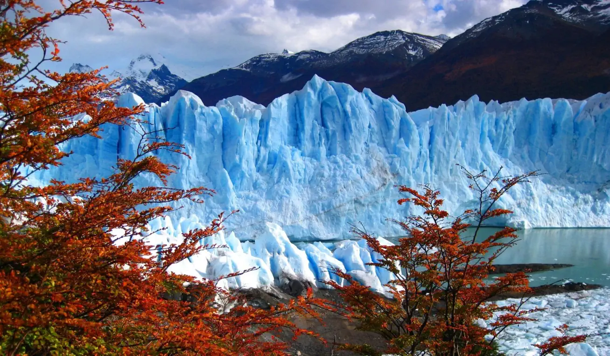
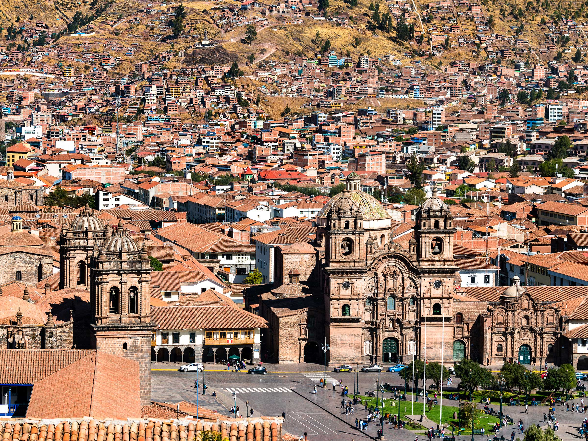

See the following Top Five best places across South America Continent

Atacama Desert
Location: Northern Chile.
Best Time to Visit: March-May or September-November.
Info: The world’s driest desert, featuring surreal landscapes and stargazing opportunities.

Perito-Moreno-Glacier
This place is the most well know place in the world

Amazom Rainforest
Location: Northern Brazil.
Best Time to Visit: June-October.
Info: The world’s largest rainforest, home to diverse flora, fauna, and indigenous cultures.

Cusco-City
Location: Border of Peru and Bolivia.
Best Time to Visit: May-November.
Info: The highest navigable lake in the world, dotted with unique floating islands.

Coffee Traiangle
Location: Central Colombia.
Best Time to Visit: December-March or July-August.
Info: A lush region producing some of the world’s best coffee, offering plantation tours.